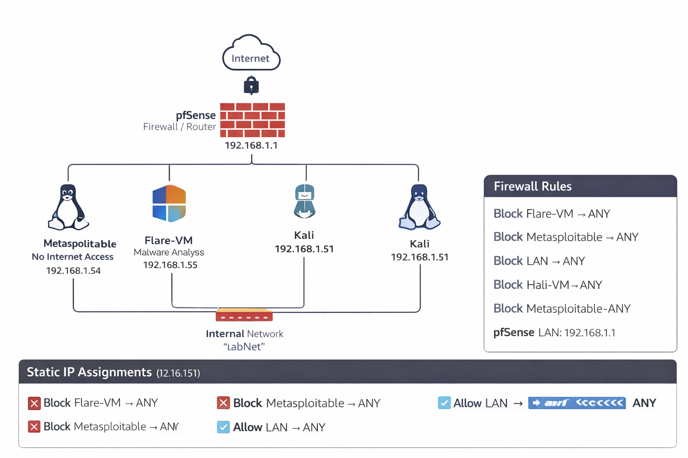

Junior SOC Analyst | Detection Engineering & Incident Response
Hands-on SOC Analyst with practical experience in alert triage, malware analysis, phishing investigation, and building security operations capabilities through Candor Labs.
Nairobi, Kenya • +254 725 873 673 • muchirijosmuchiri@gmail.com
I am the founder of Candor Labs, where I build practical security solutions including an AI-driven web security MVP and an AI-augmented SOC workflow. I maintain a realistic home SOC lab using Wazuh, Sysmon, and pfSense to develop strong hands-on skills in detection engineering, incident response, and forensics.

Segmented SOC lab with pfSense firewall, network isolation, and controlled traffic flows.
Rich endpoint telemetry collection and centralized log correlation.
MITRE ATT&CK mapped detections for web attacks, brute force, malicious macros, and more.
Full incident investigation, triage, and response with documented case studies.
Hypothesis-driven hunts including lsass credential dumping detection.
Volatility memory forensics and malicious document (VBA/MSHTML) triage.
Core SOC skills in detection, incident response, forensics, SIEM, and lab infrastructure.
NIST control mapping and risk assessment exercises.